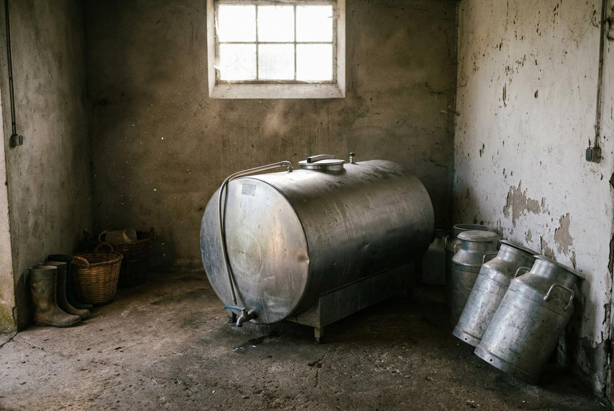

Nine farmers and one cooler
The sacco was registered in 1998 by nine farmers who were selling to a broker at the roadside and losing most of an evening's milk whenever he did not come. They bought one cooler between them and put it at Kiserian.
We now collect on three routes and pay around eight hundred members every month. The cooler at Kiserian is still there. Everything else about how the sacco runs has been rebuilt at least once, and the ledger that used to be a school exercise book is the reason this site exists.
We started with nine farmers and one cooler. The ledger was a school exercise book.
Mary Sankale, chairperson
